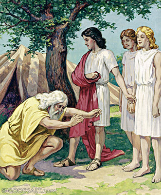

Home Quiz
Shadowland: Beginnings: Week 23
Genesis 18
The Bargain with God

- 18:2 I don't think Abraham recognized these strangers immediately.
- 18:3-5 This hospitality was de rigueur in the Middle East.
See 19:2, Hebrews 13:2, Leviticus 19:33-34
- 18:11 Sarah was post-menopause. But apparently menopause was still
late compared to today.
- 18:13 Now they know who it is.
- 18:17 Surely the Sovereign LORD does nothing without revealing his plan
to his servants the prophets. Amos 3:7
- 18:23 "Will you also destroy the righteous with the wicked?"
Genesis 20:4, Numbers 16:22, 2 Samuel 24:17
- 18:32 We now know an upper limit for the number of "righteous" in the
city. In fact, God will remove the remnant before destroying it. 19:22